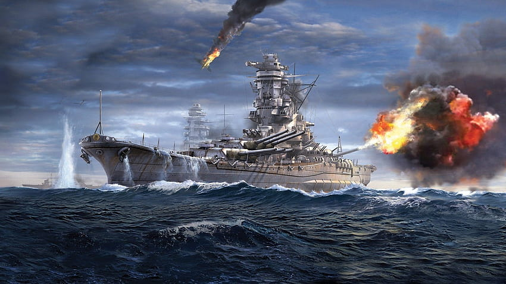

supercauraçado yamato(大和?)

O Yamato (大和?) foi um navio couraçado operado pela Marinha Imperial Japonesa na Segunda Guerra Mundial, construído pelos estaleiros do Arsenal Naval de Kure. Foi a primeira embarcação da Classe Yamato, sendo junto com seu irmão Musashi os mais pesados e poderosos navios de guerra já construídos na história.
Nomeado em homenagem à província de Yamato, ele foi projetado para combater a frota de couraçados numericamente superior da Marinha dos Estados Unidos, o principal rival do Império do Japão no oceano Pacífico. A construção do Yamato começou em novembro de 1937, sendo formalmente comissionado uma semana depois do Ataque a Pearl Harbor, em dezembro de 1941. A embarcação serviu como nau-capitânia da Frota Combinada, no ano de 1942, com o almirante Isoroku Yamamoto comandando a frota de sua ponte, durante a desastrosa Batalha de Midway. O Musashi assumiu a liderança no início do ano seguinte e o Yamato passou 1943 e boa parte de 1944 movendo-se entre as bases Truk e Kure, principalmente respondendo às ameaças norte-americanas. O navio esteve presente na Batalha do Mar das Filipinas, em junho de 1944, porém não participou do embate.
A única vez que o Yamato disparou seus canhões principais contra alvos inimigos foi em outubro de 1944, durante a Batalha do Golfo de Leyte, quando foi enviado para enfrentar forças norte-americanas que estavam invadindo as Filipinas. As embarcações japonesas acabaram por recuar quando estavam à beira da vitória, acreditando na verdade estarem enfrentando uma frota inteira de porta-aviões, em vez dos pequenos porta-aviões de escolta, que eram a única coisa que separava os couraçados dos principais navios de transporte de tropas.
O equilíbrio de poder no Pacífico ficou definitivamente contra os japoneses no decorrer do ano 1944, com sua frota assolada no início do ano seguinte, tanto pela falta de suprimentos quando de combustível. O Yamato foi enviado para Okinawa em abril de 1945, em uma tentativa desesperada de conter o avanço norte-americano, recebendo ordens para proteger a ilha até a morte. Submarinos e aeronaves inimigas avistaram a força tarefa ao sul de Kyushu, com o couraçado sendo afundado por bombardeiros e torpedeiros, junto com a maior parte de sua tripulação.

O Yamato (大和?) foi um navio couraçado operado pela Marinha Imperial Japonesa na Segunda Guerra Mundial, construído pelos estaleiros do Arsenal Naval de Kure. Foi a primeira embarcação da Classe Yamato, sendo junto com seu irmão Musashi os mais pesados e poderosos navios de guerra já construídos na história.
Projeto e construção
O governo japonês adotou uma militância ultranacionalista durante a década de 1930, com o objetivo de expandir o Império do Japão.
O país saiu da Liga das Nações em 1934 e renunciou suas obrigações ao tratado.A Marinha Imperial Japonesa começou a planejar os novos couraçados da Classe Yamato logo depois do Japão ter abandonado o Tratado Naval de Washington de 1922, que limitava o tamanho e poder de seus navios de guerra. Os planejadores reconheceram que o país seria incapaz de competir com o número de embarcações que os estaleiros dos Estados Unidos produzissem, caso uma guerra começasse.
Assim, os navios de setenta mil toneladas[3] da Classe Yamato foram projetados com capacidade para enfrentar vários outros couraçados inimigos ao mesmo tempo.
A quilha do Yamato foi batida nos estaleiros do Arsenal Naval de Kure em 4 de novembro de 1937, dentro de uma doca seca adaptada especialmente para acomodar seu casco.
A doca foi aprofundada em um metro e guindastes capazes de levantar 350 toneladas foram instalados.Sigilo extremo foi mantido durante a construção, com até mesmo um dossel sendo erguido sobre parte da rampa de lançamento, para bloquear a visão do navio.
O Yamato foi lançado em 8 de agosto de 1940, com o capitão Miyazato Shutoku no comando.
Grande esforços foram tomados para impedir que a inteligência norte-americana descobrisse sobre sua existência e especificações.
Características
A bateria principal do Yamato consistia em nove canhões navais Tipo 94 de 460 mm – o maior calibre de artilharia naval já instalado em um navio de guerra na história, embora os projéteis não fossem tão pesados quanto aqueles usados pelos canhões britânicos de 460 mm na Primeira Guerra Mundial.
Cada canhão tinha 21,13 m de comprimento, pesava 147,3 t e era capaz de disparar balas explosivas ou antiblindagem a 42 km de distância.[5] Sua bateria secundária era formada por doze canhões de 155 mm, montados em quatro torres triplas (uma na proa, uma na popa e duas a meia-nau) e doze canhões antiaéreos de 127 mm, instalados em seis torres duplas (três em cada lado a meia-nau).
Estas torres tinham sido retiradas dos cruzadores da Classe Mogami, que estavam sendo convertidos para possuir uma bateria principal de 203 mm. Além disso, o Yamato carregava 24 canhões automáticos antiaéreos de 25 mm montados principalmente a meia-nau.
O navio passou por reformas em 1944 e 1945, com a configuração da bateria secundária sendo alterada para seis canhões de 155 mm, 24 canhões de 127 mm e 162 canhões automáticos de 25 mm.

O Yamato foi projetado para poder combater vários navios ao mesmo tempo, sendo equipado com uma blindagem pesada sem paralelos para combates de superfície.
O cinturão principal de blindagem tinha 410 mm de espessura, com suas anteparas transversais chegando a uma grossura de 355 mm na área da cidadela. Além disso, a parte superior do casco era curvada para fora, algo que maximizava a proteção e rigidez ao mesmo tempo que otimizava a altura. As torres de artilharia principais contavam com uma blindagem de 650 mm de espessura.
As placas blindadas tanto do cinturão quanto das torres de artilharia era feitas de aço reforçado. O convés superior era blindado com uma liga especial de níquel-cromo-molibdênio que tinha de 200 a 230 mm de espessura. As altas quantidades de níquel na liga permitiam que a placa fosse entortada e dobrada sem desenvolver propriedades de fratura.
A técnica então relativamente recente da soldagem foi empregada por todo o navio, fortalecendo a durabilidade das placas de blindagem.
história
Operações iniciais
O Yamato passou por seus testes marítimos em outubro ou novembro de 1941, alcançando uma velocidade máxima de 27,6 nós (50,7 km/h).
Prioridade foi dada para a aceleração da construção militar enquanto a guerra se aproximava.
O navio foi formalmente comissionado meses antes do esperado, durante uma cerimônia mais austera do que o normal, no dia 16 de dezembro, pouco mais de uma semana após o Ataque a Pearl Harbor e a entrada dos Estados Unidos na Segunda Guerra Mundial, já que japoneses ainda queriam esconder as características da embarcação.
No mesmo dia, o capitão Gihachi Takayanagi assumiu o comando e o Yamato juntou-se à 1ª Divisão de Couraçados ao lado do Nagato e do Mutsu.

Em 12 de fevereiro de 1942, o navio tornou-se a nau-capitânia da Frota Combinada liderada pelo almirante Isoroku Yamamoto.
Este era um veterano da Batalha de Tsushima, na Guerra Russo-Japonesa, e também o principal responsável pelo planejamento do Ataque a Pearl Harbor, desejando um confronto decisivo contra os Estados Unidos no Atol Midway. O Yamato participou de alguns jogos de guerra e então partiu para a Baía de Hiroshima em 27 de maio, junto com o grupo de couraçados de Yamamoto.
Decifradores norte-americanos estavam cientes das intenções do almirante e a subsequente Batalha de Midway, travada entre 3 e 7 junho, mostrou-se desastrosa para a força de porta-aviões japoneses, com 4 navios e 332 aeronaves destruídas.
Yamamoto exerceu o comando geral das forças a partir da ponte de comando do Yamato, porém seu plano havia dispersado seus navios a fim de atrair os norte-americanos para uma armadilha, com o grupo de couraçados estando muito distante para poder participar da batalha.
O almirante emitiu ordens no dia 5, para que as embarcações restantes voltassem para o Japão, assim o Yamato recuou até a Ilha de Hashira antes de voltar para Kure.
Ele partiu para Truk em 17 de agosto de 1942.
O Yamato passou onze dias no mar até ser avistado pelo submarino norte-americano USS Flying Fish, que disparou quatro torpedos, os quais erraram o alvo. O navio chegou em segurança em Truk, mais tarde no mesmo dia.
Ele permaneceu no local durante toda a Batalha de Guadalcanal por falta de munição de 460 mm adequada para bombardeamento, pelos mares não mapeados de Guadalcanal e também por seu alto consumo de combustível.
Ao final do ano, o capitão Chiaki Matsuda assumiu o comando da embarcação.

O Yamato foi substituído por seu irmão Musashi como nau-capitânia da Frota Combinada em 11 de fevereiro de 1943.
O navio foi apelidado de "Hotel Yamato" pelas tripulações japonesas de cruzadores e contratorpedeiros no Pacífico Sul, já que passou apenas um dia longe de Truk desde sua chegada em agosto de 1942 até finalmente partir em 8 de maio de 1943.
Neste dia ele viajou para Yokosuka e depois até Kure, chegando em 14 de maio.
O navio permaneceu nos nove dias seguintes em uma doca seca, para inspeções e reparos gerais, navegando no Mar Interior de Seto a fim de novamente atracar em uma doca seca, onde permaneceu até julho para reequipagens e melhoras.
O Yamato começou sua volta para Truk em 16 de agosto, juntando-se a uma grande força tarefa formada em resposta aos ataques norte-americanos contra os atois de Tarawa e Makin.
Ele partiu no final de setembro para atacar a Força Tarefa 15, dos Estados Unidos, junto com o Nagato, três porta-aviões e outros navios de guerra menores, e, novamente, um mês depois, com seis couraçados, três porta-aviões e onze cruzadores.
A inteligência tinha relatado que a base de Pearl Harbor estava quase completamente vazia, com os japoneses interpretando isso como um sinal de que a força norte-americana iria atacar a Ilha Wake.
Como não houve contato no radar ao longo de seis dias, a frota voltou para Truk, chegando em 26 de outubro.
O navio escoltou a Operação de Transporte BO-1 de Truk até Yokosuka, entre 12 e 17 de dezembro.
Pouco depois, o Yamato e o Musashi foram colocados em serviço como embarcações de transporte devido a sua grande capacidade de armazenamento e grossa blindagem.
O Yamato e seu grupo foram interceptados pelo submarino norte-americano USS Skate em 25 de dezembro, enquanto transportava de Yokosuka para Truk, tropas e equipamentos necessários como reforços para as guarnições em Kavieng e nas Ilhas do Almirantado.
O submarino disparou quatro torpedos no couraçado; um deles acertou o estibordo mais para popa.
Seu casco foi aberto cinco metros abaixo da protuberância antitorpedos por um buraco de aproximadamente 25 metros, com uma junta falhando entre os cinturões superior e inferior de blindagem, inundando uma das reservas de munições da torre de artilharia traseira.
Por volta de três mil toneladas de água entraram no Yamato,porém ele conseguiu chegar em Truk no dia seguinte.
O navio de reparos Akashi realizou concertos temporários e a embarcação partiu para Kure em 10 de janeiro.
O Yamato chegou em Kure em 16 de janeiro de 1944, a fim de reparar os danos causados pelo torpedo, permanecendo na doca seca até 3 de fevereiro.
Nesse período, uma blindagem angulada em 45° foi instalada na área danificada do casco.
Foi proposto utilizar mais de cinco mil toneladas de aço para melhorar as defesas do navio contra inundações causadas por impactos de torpedos fora da cidadela blindada, porém isso foi rejeitado devido ao peso adicional que teria aumentando muito seu deslocamento e calado.
O capitão Nobuei Morishita, ex-oficial comandante do couraçado Haruna, assumiu o comando do Yamato enquanto ele ainda estava na doca. O navio junto com seu irmão Musashi foram transferidos para a 1ª Divisão de Couraçados da Segunda Frota em 25 de fevereiro.
O navio novamente foi para a doca seca em 25 de fevereiro, para mais melhorias em todos os seus radares e nos sistemas antiaéreos.
Metade das torres triplas com canhões de 155 mm foram retiradas e substituídas por três pares de canhões antiaéreos duplos de 127 mm.
Além disso, oito canhões automáticos triplos e 26 duplos de 25 mm foram adicionados, aumentando o total de canhões de 127 mm e 25 mm para 24 e 162, respectivamente.
Abrigos também foram colocados no convés superior para proteger as tripulações adicionais de defesa antiaéreas.
Dois radares de procura/controle de fogo, um Tipo 13 e outro Tipo 22, foram instalados, com o mastro principal também sendo modificado.
Além disso, seus radares foram melhorados para incluir sistemas de identificação infravermelho e também outros radares de procura área e controle de fogo.
O Yamato deixou a doca em 18 de março e passou por vários testes a partir de 11 de abril.
Ele seguiu para Kure do

O Yamato sendo atacado perto de Kure, 19 de março de 1945.
O Yamato, o Haruna e o Nagato foram transferidos em 1º de janeiro de 1945 para a recém restabelecida 1ª Divisão de Couraçados. O Yamato deixou a doca seca dois dias depois e foi para o Mar Interior de Seto.[21] Essa redesignação foi breve e a divisão foi novamente desfeita em 10 de fevereiro, com o navio sendo enviado para a 1ª Divisão de Porta-Aviões.
Em 19 de março, os porta-aviões norte-americanos USS Enterprise, USS Yorktown e USS Intrepid atacaram Kure.
Apesar de dezesseis navios de guerra terem sido atingidos, o Yamato sofreu apenas danos leves, vindos de quase acertos e uma bomba que acertou sua ponte.
Um esquadrão de aeronaves Kawanishi N1K, pilotadonha Imperial Japonesa se reorganizou, concentrando a maior parte da sua força restante na esperança de alcançar um sucesso definitivo contra os Estados Unidos.
Entretanto, nessa altura a marinha japonesa estava em experiência e números inferiores do que a marinha inimiga.
O Yamato escoltou a Frota Móvel entre 19 e 23 de junho de 1944, durante a Batalha do Mar das Filipinas, apelidada pelos pilotos norte-americanos como "O Grande Tiro aos Patos das Marianas".
O Japão acabou perdendo três porta-aviões e 426 aeronaves,com a única contribuição significante do Yamato foi disparar por engano contra um avião japonês.

O Yamato retirou-se da Frota Móvel depois da batalha e foi para a área de Hashira, perto de Kure, a fim de reabastecer e se rearmar.
Ele deixou a frota junto com o Musashi em 24 de junho, para uma rápida jornada a Kure, onde recebeu mais quinze canhões automáticos de 25 mm.
Aproveitou-se a oportunidade para colocar em prática "procedimentos emergenciais de manutenção da flutuação".
Estes resultaram na retirada de praticamente todos os itens inflamáveis do couraçado, incluindo linóleo, roupas de cama e colchões.
No lugar desta última, os tripulantes dormiam em pranchas que também poderiam ser utilizadas para concertar danos.
Pinturas inflamáveis receberam uma camada de silicone, com bombas d'água e equipamentos de combate a incêndio adicionais sendo instalados.
O navio deixou o Japão em 8 de julho indo para o sul, acompanhado dos couraçados Musashi, Kongō e Nagato, e também onze cruzadores e contratorpedeiros.
O Yamato e o Musashi foram para as Ilhas Lingga, chegando entre 16 e 17 de julho.
Nessa altura da guerra, o Japão tinha perdido boa parte da sua frota de navios tanques para os submarinos norte-americanos, com grandes frotas ficando estacionadas nas Índias Orientais para servirem como fonte de combustível.
Os dois couraçados permaneceram nas ilhas pelos próximos três meses.
Batalha do Golfo de Leyte
O Yamato participou como parte da Força Central do almirante Takeo Kurita, em um dos maiores confrontos navais de toda a história: a Batalha do Golfo de Leyte, entre 22 e 26 de outubro de 1944.
A Operação Shō-Gō se iniciou como resposta à invasão dos Estados Unidos das Filipinas, convocando grandes grupos para convergir na ilha de Leyte, onde as tropas norte-americanas tinham desembarcado.
O navio recebeu em 18 de outubro um revestimento de camuflagem negra em preparação de sua travessia noturna para o Estreito de San Bernardino; o principal ingrediente era fuligem retirada de sua própria chaminé.
A força foi atacada no caminho para Leyte em 23 de outubro, na Passagem de Palawan, pelos submarinos USS Darter e USS Dace, que conseguiram afundar os cruzadores pesados Atago e Maya, além de danificar o Takao.
Kurita estava a bordo do Atago, mas conseguiu sobreviver e transferiu seu estandarte para o Yamato.

Mar de Sibuyan
A Força Central sofreu grandes perdas no dia seguinte, durante Batalha do Mar de Sibuyan, com outros três cruzadores pesados sendo afundados, eliminando uma parte substancial da defesa antiaérea da frota.
Ao longo do dia, aeronaves norte-americanas decolaram 259 vezes dos porta-aviões.
Uma aeronave do USS Essex atingiu o Yamato com duas bombas perfuradoras de blindagem e quase acertou uma terceira; o navio sofreu danos moderados que permitiram a entrada de 3320 toneladas de água, porém ele mesmo assim permaneceu apto para o combate. Entretanto, seu irmão Musashi tornou-se o foco dos ataques norte-americanos e eventualmente afundou depois de ser atingido por pelo menos dezessete bombas e dezenove torpedos.
samar
Sem que Kurita ficasse sabendo, a principal força defensiva norte-americana do almirante William Halsey partiu de Leyte na tarde do dia 24 de outubro.
Este estava convencido que as forças do almirante japonês haviam recuado, pegando sua poderosa 3ª Frota para perseguir a Força Japonesa do Norte, um grupo de distração composto pelo porta-aviões Zuikaku, três cruzadores rápidos, dois híbridos couraçados-porta-aviões, além de suas escoltas.
A distração foi um sucesso, com mais de seiscentas aeronaves, seis couraçados, oito cruzadores e mais de quarenta contratorpedeiros afastando cinco porta-aviões e cinco cruzadores rápidos. A força de Kurita navegou pela madrugada através do Estreito de San Bernadino e atacou pouco depois ao alvorecer, na Batalha de Samar, a formação norte-americana que tinha permanecido na área a fim de prover apoio às tropas invasoras.
Este grupo era conhecido como "Taffy 3" e era formado por seis porta-aviões de escolta, três contratorpedeiros e quatro contratorpedeiros de escolta.

Durante os estágios iniciais desta batalha, o Yamato combateu inimigos de superfície pela primeira e única vez em toda sua carreira, atingindo vários navios norte-americanos.
Os rastros de quatro torpedos foram avistados depois do couraçado confirmar acertos de sua bateria principal no porta-aviões de escolta USS Gambier Bay, forçando o Yamato a se afastar do conflito a fim de se desviar e consequentemente ficando de fora do restante da batalha.
Apesar de estarem sob fogo pesado e armados apenas com torpedos e canhões de pequeno calibre, as embarcações da Taffy 3, com o apoio de aviões Grumman F4F Wildcat e Grumman TBF Avenger,[33] lutaram tão ferozmente que Kurita acreditou que sua frota estava enfrentando uma força tarefa completa de porta-aviões.
Um relatório incorreto afirmou que estavam combatendo seis porta-aviões, três cruzadores e dois contratorpedeiros, algo que fez o almirante ordenar que seus navios parassem de atirar e fugissem. O Yamato saiu do combate sem danos sérios; foram sofridos apenas três quase acertos de bombas e dezessete mortos metralhados pelos aviões durante a própria batalha, enquanto na retirada ataques dos porta-aviões causaram danos leves e feriram ou mataram 21 tripulantes.
Outros três cruzadores pesados e um cruzador rápido foram perdidos.
A Força Central conseguiu afundar um porta-aviões de escolta, dois contratorpedeiros e um contratorpedeiro de escolta.
Um outro porta-aviões afundou devido a um ataque de kamikaze, após o confronto de superfície.
Os restos da força de Kurita voltaram para Brunei após a batalha.
A 1ª Divisão de Couraçados foi desfeita em 15 de novembro de 1944, assim o Yamato tornou-se a capitânia da Segunda Frota.
O grupo de navios foi atacado pelo submarino USS Sealion em 21 de novembro, enquanto passavam pelo Mar da China Oriental, indo para o Arsenal Naval de Kure.
O couraçado Kongō e o contratorpedeiro Urakaze foram afundados.
Ao chegar, o Yamato foi colocado em uma doca seca para reparos e melhorias nas suas armas antiaéreas, com vários de seus antigos canhões sendo substituídos.
O capitão Kōsaku Aruga assumiu o comando da embarcação em 25 de novembro.
Operação Ten-Go